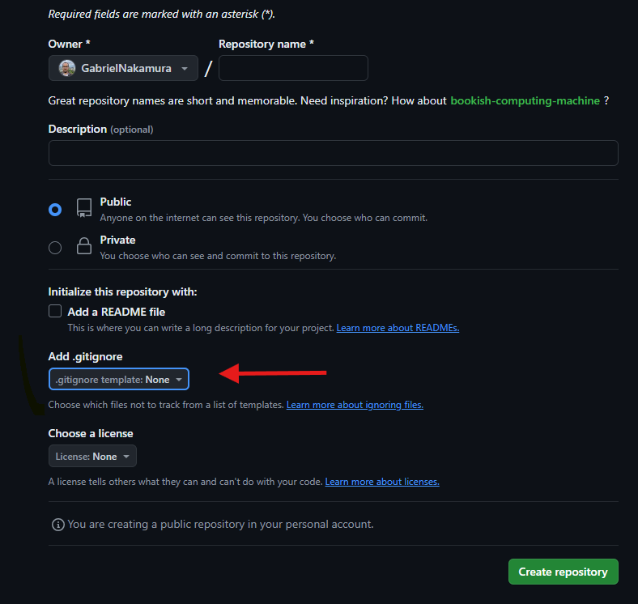

Apresentação
Nem sempre queremos que o git monitore todos os arquivos presentes no
nosso diretório. Isso pode se dar por alguns motivos. O arquivo pode
conter informações que você não queira que seja pública, ou ainda, uma
pasta inteira contém dados que são pesados demais para serem
versionados, as razões para escapar do monitoramento do versionamento
podem ser muitas. A questão é, como podemos evitar com que estes
arquivos, ou pastas inteiras, sejam versionados pelo git?
Para isso usaremos um arquivo especial chamado
.gitignore´. Você deve se lembrar que já vimos
brevemente este arquivo quando criamos o repositório. Ao iniciar o
repositório remoto, o próprio Github nos dá a opção de criar um arquivo
do tipo .gitignore a partir de um modelo pré definido, como mostrado na
imagem abaixo.

Editando o .gitignore
Cada linha no .gitignore indica um arquivo que será ignorado. Linhas
em branco não indicam arquivo algum, e são usadas para separar arquivos
que serão ignorados no .gitignore, facilitando sua leitura.
Existem maneiras diferentes de indicar os arquivos que serão
ignorados pelo git. Podemos ignorar arquivos individualmente,
simplesmente colocando o caminho relativo do arquivo, juntamente com o
nome do arquivo acompanhado de sua extensão. Por exemplo, se quisermos
ignorar o arquivo chamado meignore.doc que se encontra na
raiz do projeto, devemos apenas acrescentar em uma linha no gitignore
contendo meignore.doc.
O .gitignore também nos possibilita a utilização de padrões para
ignorar um conjunto de arquivos. Por exemplo, digamos que queremos
ignorar todos os arquivos que tem extensão .jpeg em um subdiretório do
seu working directory. Para tanto podemos inserir no arquivo .gitignore
uma linha contendo pasta/*.jpeg.
Alguns exemplos
Existem uma série de padrões. Assumindo que seu .gitignore vai estar
na raiz do diretório (top-level) podemos listar alguns padrões úteis e
como eles se aplicam aos arquivos de um dado diretório. Esta tabela é
uma adaptação desta
versão original
| **/logs |
logs/debug.loglogs/monday/foo.barbuild/logs/debug.log |
Acrescentar dois asteriscos para detectar qualquer diretório no seu
repositório. |
| **/logs/debug.log |
logs/debug.logbuild/logs/debug.logmas
nãologs/build/debug.log |
Detecta qualquer arquivo baseado em seu nome e o nome do diretório
pai. |
| *.log |
debug.logfoo.log.loglogs/debug.log |
Detecta qualquer (ou zero) caracteres de arquivos que tenha a
extensão .log. |
*.log
!important.log |
debug.logtrace.logmas
nãoimportant.loglogs/important.log |
Nega (não ignora) o padrão informado. Se um arquivo corresponde ao
padrão, mas também corresponde ao padrão para não ser ignorado, este
arquivo não vai ser ignorado. |
| /debug.log |
debug.logbut notlogs/debug.log |
Usando o slash faz correspondencia apenas a arquivos na raiz do
repositório. |
| debug.log |
debug.loglogs/debug.log |
Corresponde ao padrão em qualquer repositório |
| debug?.log |
debug0.logdebugg.logmas nãodebug10.log |
Uma interrogação vai corresponder exatamente a um caracter. |
| debug[0-9].log |
debug0.logdebug1.logmas nãodebug10.log |
Colchetes podem ser usados para correponder a qualquer caracter
dentro de um limite especificado. |
| debug[!01].log |
debug2.logmas
nãodebug0.logdebug1.logdebug01.log |
Ponto de exclamação também pode ser usado para ignorar um caracter
específico. |
| debug[a-z].log |
debuga.logdebugb.logmas nãodebug1.log |
Os limites dentro dos colchetes podem ser numéricos ou
alfabéticos. |
| logs |
logslogs/debug.loglogs/latest/foo.barbuild/logsbuild/logs/debug.log |
Se não for inserida uma barra, o padrão irá corresponder tanto a
pastas quanto os arquivos dentro das pastas que correspondem ao padrão
indicado. |
| logs/ |
logs/debug.loglogs/latest/foo.barbuild/logs/foo.barbuild/logs/latest/debug.log |
A barra indica que o padrão corresponde a um diretório específico.
Todo conteúdo de qualquer diretório no repositório que corresponda ao
padrão, e todos os arquivos dentro dele, serão ignorados. |
| logs/*day/debug.log |
logs/monday/debug.log
logs/tuesday/debug.logbut
notlogs/latest/debug.log |
Wildcards podem ser usados em qualquer diretório dentro do
repositório. |
| logs/debug.log |
logs/debug.logmas
nãodebug.logbuild/logs/debug.log |
Padrões especificando um arquivo em um diretório particular
correspondem apenas ao caminho a partir da raiz. |
Alguns problemas: ignorando arquivos após adicionados
Um problema comum de se deparar é quando adicionamos um arquivo, ou
uma pasta no repositório que está sendo versionado, e logo após nos
damos conta de que não gostaríamos de que estes arquivos fossem
versionados.
Adicioná-los no .gitignore não vai resolver o problema, pois o git já
entendeu que eles devem ser monitorados. Neste caso teremos que fazer um
pequeno procedimento antes de adicioná-los no .gitignore.
Primeiro precisamos remover estes, ou este, arquivo da “memória” de
monitoramento do git. Para isso iremos digitar na linha de comando
git rm --cached nome-do-arquivo.extensão
Após esse procedimento adicionamos o nome do arquivo no
.gitignore
A partir deste momento o arquivo adicionado não será mais monitorado
pelo git, mas ainda vai estar presente no seu diretório. Além disso, o
histórico de commits que foi realizado enquanto esse arquivo estava
sendo monitorado não vai desaparecer.
Portanto, a melhor prática sempre é pensar bem antes de adicionar
qualquer arquivo na pasta monitorada pelo git.
Outras referências úteis
Para mais referências sobre padrões e como montar o arquivo
.gitignore, consulte estas fontes
LS0tDQp0aXRsZTogJ1V0aWxpemFuZG8gbyBnaXRpZ25vcmUnDQphdXRob3I6ICJHYWJyaWVsIE5ha2FtdXJhIg0KZGF0ZTogImByIFN5cy5EYXRlKClgIg0Kb3V0cHV0OiBodG1sX2RvY3VtZW50DQotLS0NCg0KYGBge3Igc2V0dXAsIGluY2x1ZGU9RkFMU0V9DQprbml0cjo6b3B0c19jaHVuayRzZXQoZWNobyA9IFRSVUUsIGZpZy5hbGlnbiA9ICJjZW50ZXIiKQ0KYGBgDQoNCmBgYHtyIGtsaXBweSwgZWNobz1GQUxTRSwgaW5jbHVkZT1UUlVFfQ0Ka2xpcHB5OjprbGlwcHkoKQ0KYGBgDQoNCiMgQXByZXNlbnRhw6fDo28NCg0KTmVtIHNlbXByZSBxdWVyZW1vcyBxdWUgbyBnaXQgbW9uaXRvcmUgdG9kb3Mgb3MgYXJxdWl2b3MgcHJlc2VudGVzIG5vIG5vc3NvIGRpcmV0w7NyaW8uIElzc28gcG9kZSBzZSBkYXIgcG9yIGFsZ3VucyBtb3Rpdm9zLiBPIGFycXVpdm8gcG9kZSBjb250ZXIgaW5mb3JtYcOnw7VlcyBxdWUgdm9jw6ogbsOjbyBxdWVpcmEgcXVlIHNlamEgcMO6YmxpY2EsIG91IGFpbmRhLCB1bWEgcGFzdGEgaW50ZWlyYSBjb250w6ltIGRhZG9zIHF1ZSBzw6NvIHBlc2Fkb3MgZGVtYWlzIHBhcmEgc2VyZW0gdmVyc2lvbmFkb3MsIGFzIHJhesO1ZXMgcGFyYSBlc2NhcGFyIGRvIG1vbml0b3JhbWVudG8gZG8gdmVyc2lvbmFtZW50byBwb2RlbSBzZXIgbXVpdGFzLiBBIHF1ZXN0w6NvIMOpLCBjb21vIHBvZGVtb3MgZXZpdGFyIGNvbSBxdWUgZXN0ZXMgYXJxdWl2b3MsIG91IHBhc3RhcyBpbnRlaXJhcywgc2VqYW0gdmVyc2lvbmFkb3MgcGVsbyBnaXQ/IA0KDQpQYXJhIGlzc28gdXNhcmVtb3MgdW0gYXJxdWl2byBlc3BlY2lhbCBjaGFtYWRvICoqLmdpdGlnbm9yZcK0KiouIFZvY8OqIGRldmUgc2UgbGVtYnJhciBxdWUgasOhIHZpbW9zIGJyZXZlbWVudGUgZXN0ZSBhcnF1aXZvIHF1YW5kbyBjcmlhbW9zIG8gcmVwb3NpdMOzcmlvLiBBbyBpbmljaWFyIG8gcmVwb3NpdMOzcmlvIHJlbW90bywgbyBwcsOzcHJpbyBHaXRodWIgbm9zIGTDoSBhIG9ww6fDo28gZGUgY3JpYXIgdW0gYXJxdWl2byBkbyB0aXBvIC5naXRpZ25vcmUgYSBwYXJ0aXIgZGUgdW0gbW9kZWxvIHByw6kgZGVmaW5pZG8sIGNvbW8gbW9zdHJhZG8gbmEgaW1hZ2VtIGFiYWl4by4NCg0KYGBge3IgZWNobz1GQUxTRSwgZXZhbD1UUlVFfQ0Ka25pdHI6OmluY2x1ZGVfZ3JhcGhpY3MoImZpZ3MvdGVtcGxhdGVfZ2l0aWdub3JlLnBuZyIpDQoNCmBgYA0KDQojIEVkaXRhbmRvIG8gLmdpdGlnbm9yZQ0KDQpDYWRhIGxpbmhhIG5vIC5naXRpZ25vcmUgaW5kaWNhIHVtIGFycXVpdm8gcXVlIHNlcsOhIGlnbm9yYWRvLiBMaW5oYXMgZW0gYnJhbmNvIG7Do28gaW5kaWNhbSBhcnF1aXZvIGFsZ3VtLCBlIHPDo28gdXNhZGFzIHBhcmEgc2VwYXJhciBhcnF1aXZvcyBxdWUgc2Vyw6NvIGlnbm9yYWRvcyBubyAuZ2l0aWdub3JlLCBmYWNpbGl0YW5kbyBzdWEgbGVpdHVyYS4NCg0KRXhpc3RlbSBtYW5laXJhcyBkaWZlcmVudGVzIGRlIGluZGljYXIgb3MgYXJxdWl2b3MgcXVlIHNlcsOjbyBpZ25vcmFkb3MgcGVsbyBnaXQuIFBvZGVtb3MgaWdub3JhciBhcnF1aXZvcyBpbmRpdmlkdWFsbWVudGUsIHNpbXBsZXNtZW50ZSBjb2xvY2FuZG8gbyBjYW1pbmhvIHJlbGF0aXZvIGRvIGFycXVpdm8sIGp1bnRhbWVudGUgY29tIG8gbm9tZSBkbyBhcnF1aXZvIGFjb21wYW5oYWRvIGRlIHN1YSBleHRlbnPDo28uIFBvciBleGVtcGxvLCBzZSBxdWlzZXJtb3MgaWdub3JhciBvIGFycXVpdm8gY2hhbWFkbyBgbWVpZ25vcmUuZG9jYCBxdWUgc2UgZW5jb250cmEgbmEgcmFpeiBkbyBwcm9qZXRvLCBkZXZlbW9zIGFwZW5hcyBhY3Jlc2NlbnRhciBlbSB1bWEgbGluaGEgbm8gZ2l0aWdub3JlIGNvbnRlbmRvIGBtZWlnbm9yZS5kb2NgLg0KDQpPIC5naXRpZ25vcmUgdGFtYsOpbSBub3MgcG9zc2liaWxpdGEgYSB1dGlsaXphw6fDo28gZGUgcGFkcsO1ZXMgcGFyYSBpZ25vcmFyIHVtIGNvbmp1bnRvIGRlIGFycXVpdm9zLiBQb3IgZXhlbXBsbywgZGlnYW1vcyBxdWUgcXVlcmVtb3MgaWdub3JhciB0b2RvcyBvcyBhcnF1aXZvcyBxdWUgdGVtIGV4dGVuc8OjbyAuanBlZyBlbSB1bSBzdWJkaXJldMOzcmlvIGRvIHNldSB3b3JraW5nIGRpcmVjdG9yeS4gUGFyYSB0YW50byBwb2RlbW9zIGluc2VyaXIgbm8gYXJxdWl2byAuZ2l0aWdub3JlIHVtYSBsaW5oYSBjb250ZW5kbyBgcGFzdGEvKi5qcGVnYC4NCg0KIyBBbGd1bnMgZXhlbXBsb3MNCg0KRXhpc3RlbSB1bWEgc8OpcmllIGRlIHBhZHLDtWVzLiBBc3N1bWluZG8gcXVlIHNldSAuZ2l0aWdub3JlIHZhaSBlc3RhciBuYSByYWl6IGRvIGRpcmV0w7NyaW8gICh0b3AtbGV2ZWwpIHBvZGVtb3MgbGlzdGFyIGFsZ3VucyBwYWRyw7VlcyDDunRlaXMgZSBjb21vIGVsZXMgc2UgYXBsaWNhbSBhb3MgYXJxdWl2b3MgZGUgdW0gZGFkbyBkaXJldMOzcmlvLiBFc3RhIHRhYmVsYSDDqSB1bWEgYWRhcHRhw6fDo28gW2Rlc3RhIHZlcnPDo28gb3JpZ2luYWxdKGh0dHBzOi8vZ2lzdC5naXRodWIuY29tL2pzdG5sdm5zL2ViYWEwNDZmYWUxNjU0M2NjOWVmYzdmMjRiY2QwZTMxKQ0KDQp8UGFkcsOjb3xFeGVtcGxvcyBxdWUgc8OjbyBkZXRlY3RhZG9zfEV4cGxpY2HDp8Ojb3wNCnwtLS0tLS0tfC0tLS0tLS0tLS0tLS0tLS18LS0tLS0tLS0tLS0tfA0KfCoqL2xvZ3N8bG9ncy9kZWJ1Zy5sb2c8L2JyPmxvZ3MvbW9uZGF5L2Zvby5iYXI8L2JyPmJ1aWxkL2xvZ3MvZGVidWcubG9nfEFjcmVzY2VudGFyIGRvaXMgYXN0ZXJpc2NvcyBwYXJhIGRldGVjdGFyIHF1YWxxdWVyIGRpcmV0w7NyaW8gbm8gc2V1IHJlcG9zaXTDs3Jpby58DQp8KiovbG9ncy9kZWJ1Zy5sb2d8bG9ncy9kZWJ1Zy5sb2c8L2JyPmJ1aWxkL2xvZ3MvZGVidWcubG9nPC9icj5fbWFzIG7Do29fPC9icj5sb2dzL2J1aWxkL2RlYnVnLmxvZ3xEZXRlY3RhIHF1YWxxdWVyIGFycXVpdm8gYmFzZWFkbyBlbSBzZXUgbm9tZSBlIG8gbm9tZSBkbyBkaXJldMOzcmlvIHBhaS58DQp8Ki5sb2d8ZGVidWcubG9nPC9icj5mb28ubG9nPC9icj4ubG9nPC9icj5sb2dzL2RlYnVnLmxvZ3xEZXRlY3RhIHF1YWxxdWVyIChvdSB6ZXJvKSBjYXJhY3RlcmVzIGRlIGFycXVpdm9zIHF1ZSB0ZW5oYSBhIGV4dGVuc8OjbyAubG9nLg0KfCoubG9nPGJyPiFpbXBvcnRhbnQubG9nfGRlYnVnLmxvZzwvYnI+dHJhY2UubG9nPC9icj5fbWFzIG7Do29fPC9icj5pbXBvcnRhbnQubG9nPC9icj5sb2dzL2ltcG9ydGFudC5sb2d8TmVnYSAobsOjbyBpZ25vcmEpIG8gcGFkcsOjbyBpbmZvcm1hZG8uIFNlIHVtIGFycXVpdm8gY29ycmVzcG9uZGUgYW8gcGFkcsOjbywgbWFzIHRhbWLDqW0gY29ycmVzcG9uZGUgYW8gcGFkcsOjbyBwYXJhIG7Do28gc2VyIGlnbm9yYWRvLCBlc3RlIGFycXVpdm8gbsOjbyB2YWkgc2VyIGlnbm9yYWRvLnwNCnwvZGVidWcubG9nfGRlYnVnLmxvZzwvYnI+X2J1dCBub3RfPC9icj5sb2dzL2RlYnVnLmxvZ3xVc2FuZG8gbyBzbGFzaCBmYXogY29ycmVzcG9uZGVuY2lhIGFwZW5hcyBhIGFycXVpdm9zIG5hIHJhaXogZG8gcmVwb3NpdMOzcmlvLnwNCnxkZWJ1Zy5sb2d8ZGVidWcubG9nPC9icj5sb2dzL2RlYnVnLmxvZ3xDb3JyZXNwb25kZSBhbyBwYWRyw6NvIGVtIHF1YWxxdWVyIHJlcG9zaXTDs3Jpb3wNCnxkZWJ1Zz8ubG9nfGRlYnVnMC5sb2c8L2JyPmRlYnVnZy5sb2c8L2JyPl9tYXMgbsOjb188L2JyPmRlYnVnMTAubG9nfFVtYSBpbnRlcnJvZ2HDp8OjbyB2YWkgY29ycmVzcG9uZGVyIGV4YXRhbWVudGUgYSB1bSBjYXJhY3Rlci58DQp8ZGVidWdbMC05XS5sb2d8ZGVidWcwLmxvZzwvYnI+ZGVidWcxLmxvZzwvYnI+X21hcyBuw6NvXzwvYnI+ZGVidWcxMC5sb2d8Q29sY2hldGVzIHBvZGVtIHNlciB1c2Fkb3MgcGFyYSBjb3JyZXBvbmRlciBhIHF1YWxxdWVyIGNhcmFjdGVyIGRlbnRybyBkZSB1bSBsaW1pdGUgZXNwZWNpZmljYWRvLnwNCnxkZWJ1Z1shMDFdLmxvZ3xkZWJ1ZzIubG9nPC9icj5fbWFzIG7Do29fPC9icj5kZWJ1ZzAubG9nPC9icj5kZWJ1ZzEubG9nPC9icj5kZWJ1ZzAxLmxvZ3xQb250byBkZSBleGNsYW1hw6fDo28gdGFtYsOpbSBwb2RlIHNlciB1c2FkbyBwYXJhIGlnbm9yYXIgdW0gY2FyYWN0ZXIgZXNwZWPDrWZpY28ufA0KfGRlYnVnW2Etel0ubG9nfGRlYnVnYS5sb2c8L2JyPmRlYnVnYi5sb2c8L2JyPl9tYXMgbsOjb188L2JyPmRlYnVnMS5sb2d8T3MgbGltaXRlcyBkZW50cm8gZG9zIGNvbGNoZXRlcyBwb2RlbSBzZXIgbnVtw6lyaWNvcyBvdSBhbGZhYsOpdGljb3MufA0KfGxvZ3N8bG9nczwvYnI+bG9ncy9kZWJ1Zy5sb2c8L2JyPmxvZ3MvbGF0ZXN0L2Zvby5iYXI8L2JyPmJ1aWxkL2xvZ3M8L2JyPmJ1aWxkL2xvZ3MvZGVidWcubG9nfFNlIG7Do28gZm9yIGluc2VyaWRhIHVtYSBiYXJyYSwgbyBwYWRyw6NvIGlyw6EgY29ycmVzcG9uZGVyIHRhbnRvIGEgcGFzdGFzIHF1YW50byBvcyBhcnF1aXZvcyBkZW50cm8gZGFzIHBhc3RhcyBxdWUgY29ycmVzcG9uZGVtIGFvIHBhZHLDo28gaW5kaWNhZG8ufA0KfGxvZ3MvfGxvZ3MvZGVidWcubG9nPC9icj5sb2dzL2xhdGVzdC9mb28uYmFyPC9icj5idWlsZC9sb2dzL2Zvby5iYXI8L2JyPmJ1aWxkL2xvZ3MvbGF0ZXN0L2RlYnVnLmxvZ3xBIGJhcnJhIGluZGljYSBxdWUgbyBwYWRyw6NvIGNvcnJlc3BvbmRlIGEgdW0gZGlyZXTDs3JpbyBlc3BlY8OtZmljby4gVG9kbyBjb250ZcO6ZG8gZGUgcXVhbHF1ZXIgZGlyZXTDs3JpbyBubyByZXBvc2l0w7NyaW8gcXVlIGNvcnJlc3BvbmRhIGFvIHBhZHLDo28sIGUgdG9kb3Mgb3MgYXJxdWl2b3MgZGVudHJvIGRlbGUsIHNlcsOjbyBpZ25vcmFkb3MufA0KfGxvZ3MvKmRheS9kZWJ1Zy5sb2d8bG9ncy9tb25kYXkvZGVidWcubG9nPGJyPmxvZ3MvdHVlc2RheS9kZWJ1Zy5sb2c8L2JyPl9idXQgbm90XzwvYnI+bG9ncy9sYXRlc3QvZGVidWcubG9nfFdpbGRjYXJkcyBwb2RlbSBzZXIgdXNhZG9zIGVtIHF1YWxxdWVyIGRpcmV0w7NyaW8gZGVudHJvIGRvIHJlcG9zaXTDs3Jpby58DQp8bG9ncy9kZWJ1Zy5sb2d8bG9ncy9kZWJ1Zy5sb2c8L2JyPl9tYXMgbsOjb188L2JyPmRlYnVnLmxvZzwvYnI+YnVpbGQvbG9ncy9kZWJ1Zy5sb2d8UGFkcsO1ZXMgZXNwZWNpZmljYW5kbyB1bSBhcnF1aXZvIGVtIHVtIGRpcmV0w7NyaW8gcGFydGljdWxhciBjb3JyZXNwb25kZW0gYXBlbmFzIGFvIGNhbWluaG8gYSBwYXJ0aXIgZGEgcmFpei58DQoNCiMgQWxndW5zIHByb2JsZW1hczogaWdub3JhbmRvIGFycXVpdm9zIGFww7NzIGFkaWNpb25hZG9zIA0KDQpVbSBwcm9ibGVtYSBjb211bSBkZSBzZSBkZXBhcmFyIMOpIHF1YW5kbyBhZGljaW9uYW1vcyB1bSBhcnF1aXZvLCBvdSB1bWEgcGFzdGEgbm8gcmVwb3NpdMOzcmlvIHF1ZSBlc3TDoSBzZW5kbyB2ZXJzaW9uYWRvLCBlIGxvZ28gYXDDs3Mgbm9zIGRhbW9zIGNvbnRhIGRlIHF1ZSBuw6NvIGdvc3RhcsOtYW1vcyBkZSBxdWUgZXN0ZXMgYXJxdWl2b3MgZm9zc2VtIHZlcnNpb25hZG9zLg0KDQpBZGljaW9uw6EtbG9zIG5vIC5naXRpZ25vcmUgbsOjbyB2YWkgcmVzb2x2ZXIgbyBwcm9ibGVtYSwgcG9pcyBvIGdpdCBqw6EgZW50ZW5kZXUgcXVlIGVsZXMgZGV2ZW0gc2VyIG1vbml0b3JhZG9zLiBOZXN0ZSBjYXNvIHRlcmVtb3MgcXVlIGZhemVyIHVtIHBlcXVlbm8gcHJvY2VkaW1lbnRvIGFudGVzIGRlIGFkaWNpb27DoS1sb3Mgbm8gLmdpdGlnbm9yZS4NCg0KUHJpbWVpcm8gcHJlY2lzYW1vcyByZW1vdmVyIGVzdGVzLCBvdSBlc3RlLCBhcnF1aXZvIGRhICJtZW3Ds3JpYSIgZGUgbW9uaXRvcmFtZW50byBkbyBnaXQuIFBhcmEgaXNzbyBpcmVtb3MgZGlnaXRhciBuYSBsaW5oYSBkZSBjb21hbmRvIGBnaXQgcm0gLS1jYWNoZWQgbm9tZS1kby1hcnF1aXZvLmV4dGVuc8Ojb2AgDQoNCkFww7NzIGVzc2UgcHJvY2VkaW1lbnRvIGFkaWNpb25hbW9zIG8gbm9tZSBkbyBhcnF1aXZvIG5vIC5naXRpZ25vcmUNCg0KQSBwYXJ0aXIgZGVzdGUgbW9tZW50byBvIGFycXVpdm8gYWRpY2lvbmFkbyBuw6NvIHNlcsOhIG1haXMgbW9uaXRvcmFkbyBwZWxvIGdpdCwgbWFzIGFpbmRhIHZhaSBlc3RhciBwcmVzZW50ZSBubyBzZXUgZGlyZXTDs3Jpby4gQWzDqW0gZGlzc28sIG8gaGlzdMOzcmljbyBkZSBjb21taXRzIHF1ZSBmb2kgcmVhbGl6YWRvIGVucXVhbnRvIGVzc2UgYXJxdWl2byBlc3RhdmEgc2VuZG8gbW9uaXRvcmFkbyBuw6NvIHZhaSBkZXNhcGFyZWNlci4NCg0KUG9ydGFudG8sIGEgbWVsaG9yIHByw6F0aWNhIHNlbXByZSDDqSBwZW5zYXIgYmVtIGFudGVzIGRlIGFkaWNpb25hciBxdWFscXVlciBhcnF1aXZvIG5hIHBhc3RhIG1vbml0b3JhZGEgcGVsbyBnaXQuDQoNCg0KIyBPdXRyYXMgcmVmZXLDqm5jaWFzIMO6dGVpcw0KDQpQYXJhIG1haXMgcmVmZXLDqm5jaWFzIHNvYnJlIHBhZHLDtWVzIGUgY29tbyBtb250YXIgbyBhcnF1aXZvIC5naXRpZ25vcmUsIGNvbnN1bHRlIGVzdGFzIGZvbnRlcw0KDQotIFtEb2N1bWVudGHDp8OjbyBkbyBHaXRodWJdKGh0dHBzOi8vZG9jcy5naXRodWIuY29tL3B0L2dldC1zdGFydGVkL2dldHRpbmctc3RhcnRlZC13aXRoLWdpdC9pZ25vcmluZy1maWxlcykNCg0KLSBbRG9jdW1lbnRhw6fDo28gZG8gR2l0XShodHRwczovL2dpdC1zY20uY29tL2RvY3MvZ2l0aWdub3JlKQ0KDQotIFtBbGd1bnMgbW9kZWxvcyBkZSBhcnF1aXZvcyAuZ2l0aWdub3JlXShodHRwczovL2dpdGh1Yi5jb20vZ2l0aHViL2dpdGlnbm9yZSkNCg0K